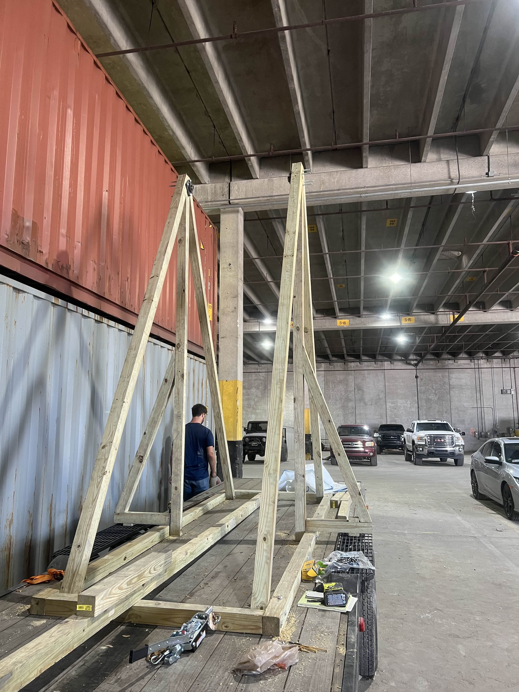
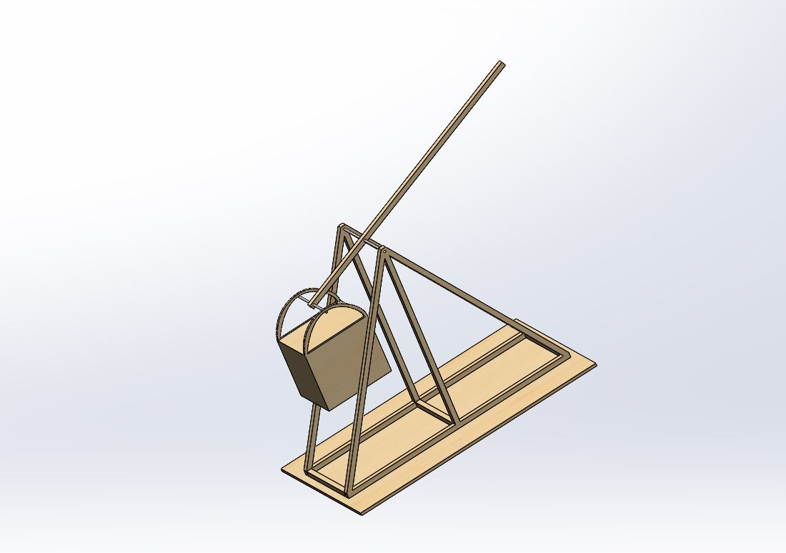
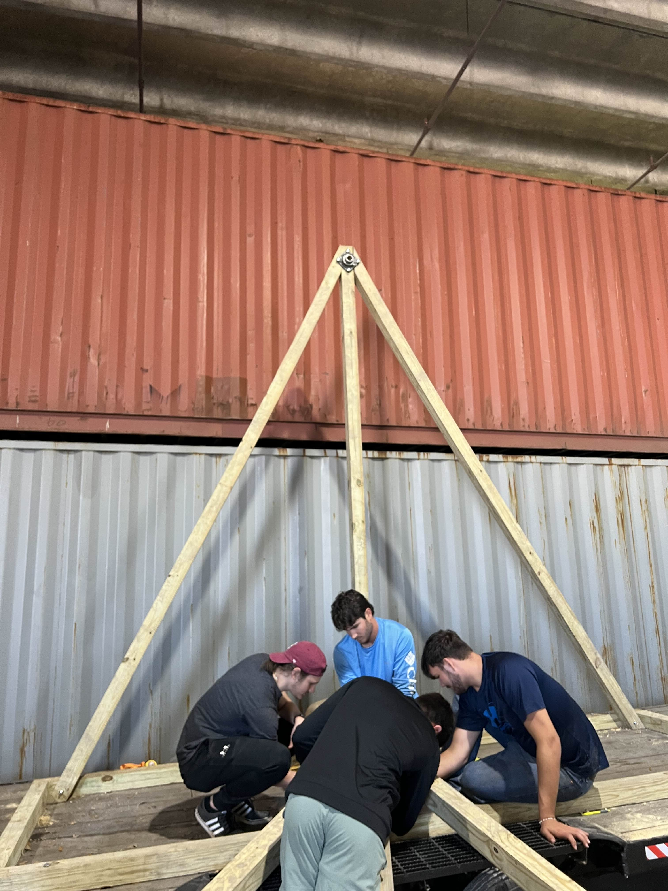
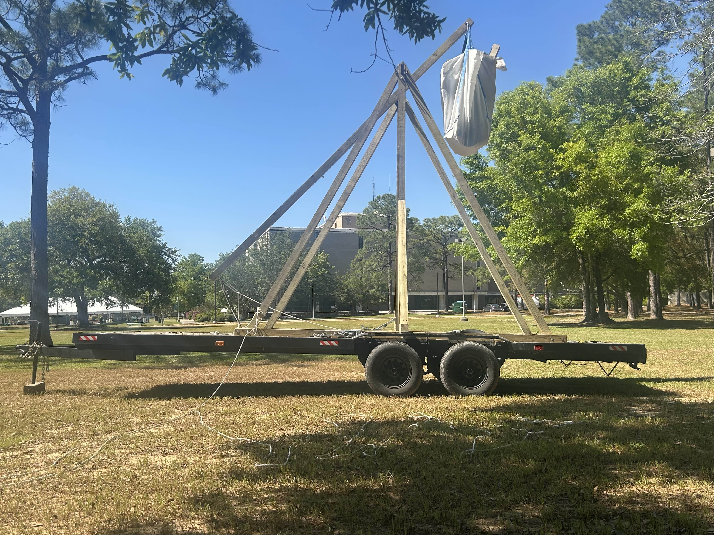

Project Overview
Objective: The Pensacola Trebuchet project aimed to design and build a large-scale medieval-style trebuchet capable of launching a 25 lb projectile a distance of 150 yards with a reload time of roughly one minute. Due to material and safety limitations, the project scope was later adjusted to a 10 lb projectile and a target range of 60 yards
The multidisciplinary team was divided into four subteams: Ballistics, Structure, Release Mechanism, and Beam Design. Each team developed its own analytical design tool to optimize its part of the trebuchet. My primary contribution was on the Structure Team, responsible for the design, stress analysis, and CAD modeling of the base and pivot system.

Design and Development
As part of the Structure Team, I performed structural and buckling analyses of the frame and pivot assembly to ensure stability under the extreme forces generated by counterweight release. The trebuchet base was designed to handle both static and dynamic loads using a combination of manual calculations and FEA verification in ANSYS. These analyses were cross-checked to confirm that the structure could support the moment generated by the counterweight system.
The final structure was a wood-and-steel hybrid system mounted on a steel trailer platform for mobility. Pivot rod sizing and stress validation were performed to confirm load capacity. The CAD model (Figures 9 & 10 from the report) was created in SolidWorks and used for fabrication and assembly .
- Software Tools: SolidWorks (CAD), ANSYS (FEA), Excel (design tool calculations)
- Design Focus: Frame stiffness, buckling prevention, pivot reaction forces, and load path optimization
- Construction Materials: Pressure-treated pine and steel reinforcements

Ballistics & Release Mechanism
The Ballistics Team created a simulation tool that modeled projectile range and trajectory based on launch velocity, release angle, and projectile dimensions. The program produced accurate range graphs and height predictions. Due to reduced trebuchet dimensions, maximum range was revised to approximately 60 yards with a 10 lb projectile.
Projectile material testing initially included sand, dirt, and ice composites, but due to drying and weight issues, watermelons were selected as the final test projectile for their availability, weight, and shape suitability.
The Release Mechanism Team developed a variable-angle sling system using low-stretch rope and a rubber mat, attached via a lightweight metal bracket. This design allowed fine-tuning of the release angle and ensured consistent trajectory performance across multiple launches.
Failure Analysis & Lessons Learned
During final assembly, a critical structural failure occurred while raising the counterweight — the main beam snapped under load. Post-failure analysis revealed that the original stress and buckling calculations had not accounted for the 1.5-inch pivot hole drilled through the main beam. This oversight significantly weakened the cross-section, causing the failure under lifting load.
Subsequent CAD-based FEA with the pivot hole confirmed that the 4x4x16 pressure-treated pine beam was insufficient for the expected bending stress. Future iterations would require upgrading to a 6x6 or 8x8 beam to meet strength requirements and maintain safety during lifting and firing operations.
Budget Overview
The project received funding through a combination of GoFundMe donations and a $1,000 UWF grant. The largest expense was a $1,400 trailer used as the trebuchet’s construction platform. While the final build exceeded the original budget, the materials and data acquired laid groundwork for future large-scale builds.
Gallery


Project Documentation
The final report includes detailed calculations, SolidWorks drawings, FEA results, budget breakdowns, and a ballistic model of the projectile system. You can view the full report below:
📄 View Final Report (PDF)